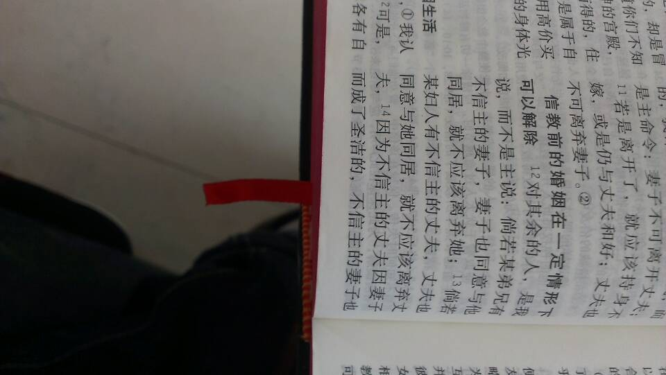
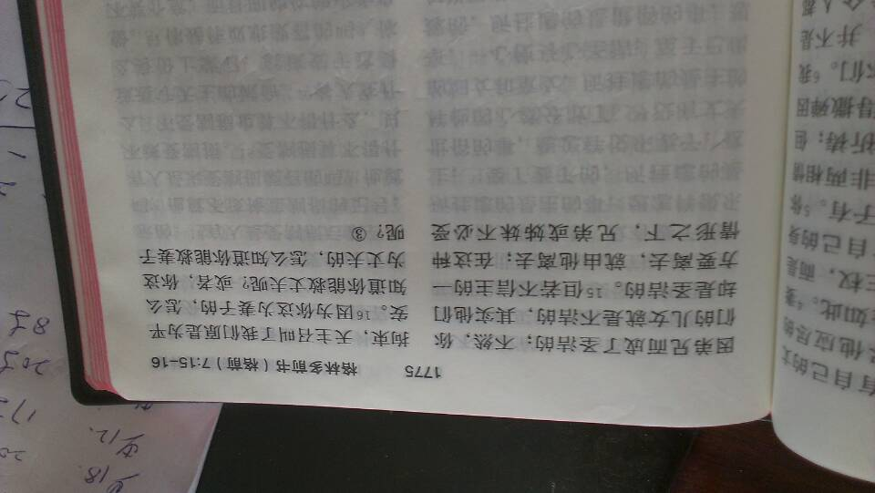
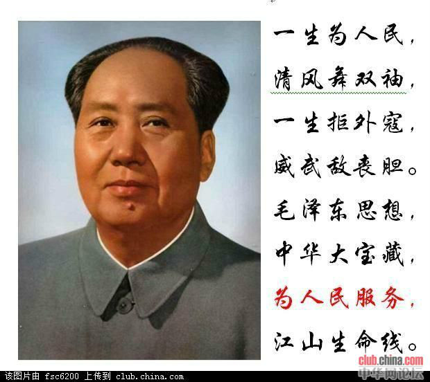

Conversation with 81184027 at Fri 04 Apr 2014 11:18:47 AM CST on 154115835 (webqq)
(11:11:53 AM) 阿萨汗蛋包飯: 那是市区美，城乡结合处是另一番景象
(11:11:53 AM) 阿萨汗蛋包飯: 那是市区美，城乡结合处是另一番景象
(11:13:56 AM) 阿萨汗蛋包飯: 呵呵欢迎
(11:11:21 AM) 福建-福州&水浒: 南平很美
(11:14:40 AM) 埃及无雪: :face23:
(11:11:26 AM) 阿萨汗蛋包飯: 基本都是白发苍苍拄着拐杖的
(11:14:56 AM) 福建-福州&水浒: 真想去你工作的地方看一看
(11:12:19 AM) 福建-福州&水浒: 嗯
(11:15:24 AM) 福建-福州&水浒: 那种地方我也去了好几次
(11:12:59 AM) 福建-福州&水浒: :face13:
(11:15:45 AM) 福建-福州&水浒: 怕倒不会
(11:17:21 AM) 福建-福州&水浒: 回复 陕西-西安@删除记忆：你这资料哪里来的
(11:12:59 AM) 福建-福州&水浒: 南平人民欢迎我么？
(11:14:34 AM) 福建-福州&水浒: :face71:
(11:15:06 AM) 阿萨汗蛋包飯: :face96:火葬场别来
(11:15:17 AM) 阿萨汗蛋包飯: 出租车都忌讳来这里
(11:16:10 AM) 陕西-西安@删除记忆: 上帝禁止信徒与不信之人结婚──上帝的子民不该冒险踏入禁地。信徒与不信之人结婚是上帝所禁止的。可惜未曾悔改的心往往随从己欲，而不为上帝所准许的婚姻便成立了。就因为这个缘故，有许许多多的男女活在世上没有指望，也没有上帝。他们高尚的抱负死灭了，他们已被环境所捆绑，而陷入了撒但的网罗。凡为情欲和冲动所辖制的人，必终身收割痛苦的后果，而他们所采取的方式更可能使他们的灵命丧亡。（四）
多可怕
(11:16:12 AM) 福建-福州&水浒: 我以前经常走夜路，而且还是两边都是墓地的那种
(11:18:06 AM) 福建-福州&水浒: 与圣经教义完全两样
(11:17:40 AM) 福建-福州&水浒: 没这种说法，偏见了
(11:17:20 AM) 埃及无雪: :face55:
(11:11:53 AM) 阿萨汗蛋包飯: 那是市区美，城乡结合处是另一番景象
(11:13:56 AM) 阿萨汗蛋包飯: 呵呵欢迎
(11:11:21 AM) 福建-福州&水浒: 南平很美
(11:14:40 AM) 埃及无雪: :face23:
(11:11:26 AM) 阿萨汗蛋包飯: 基本都是白发苍苍拄着拐杖的
(11:14:56 AM) 福建-福州&水浒: 真想去你工作的地方看一看
(11:12:19 AM) 福建-福州&水浒: 嗯
(11:15:24 AM) 福建-福州&水浒: 那种地方我也去了好几次
(11:12:59 AM) 福建-福州&水浒: :face13:
(11:15:45 AM) 福建-福州&水浒: 怕倒不会
(11:17:21 AM) 福建-福州&水浒: 回复 陕西-西安@删除记忆：你这资料哪里来的
(11:12:59 AM) 福建-福州&水浒: 南平人民欢迎我么？
(11:14:34 AM) 福建-福州&水浒: :face71:
(11:15:06 AM) 阿萨汗蛋包飯: :face96:火葬场别来
(11:15:17 AM) 阿萨汗蛋包飯: 出租车都忌讳来这里
(11:16:10 AM) 陕西-西安@删除记忆: 上帝禁止信徒与不信之人结婚──上帝的子民不该冒险踏入禁地。信徒与不信之人结婚是上帝所禁止的。可惜未曾悔改的心往往随从己欲，而不为上帝所准许的婚姻便成立了。就因为这个缘故，有许许多多的男女活在世上没有指望，也没有上帝。他们高尚的抱负死灭了，他们已被环境所捆绑，而陷入了撒但的网罗。凡为情欲和冲动所辖制的人，必终身收割痛苦的后果，而他们所采取的方式更可能使他们的灵命丧亡。（四）
多可怕
(11:16:12 AM) 福建-福州&水浒: 我以前经常走夜路，而且还是两边都是墓地的那种
(11:18:06 AM) 福建-福州&水浒: 与圣经教义完全两样
(11:17:40 AM) 福建-福州&水浒: 没这种说法，偏见了
(11:17:20 AM) 埃及无雪: :face55:
(11:18:53 AM) 陕西-西安@删除记忆: 这是我在网上看的全能神资料
(11:11:53 AM) 阿萨汗蛋包飯: 那是市区美，城乡结合处是另一番景象
(11:13:56 AM) 阿萨汗蛋包飯: 呵呵欢迎
(11:11:21 AM) 福建-福州&水浒: 南平很美
(11:14:40 AM) 埃及无雪: :face23:
(11:11:26 AM) 阿萨汗蛋包飯: 基本都是白发苍苍拄着拐杖的
(11:14:56 AM) 福建-福州&水浒: 真想去你工作的地方看一看
(11:12:19 AM) 福建-福州&水浒: 嗯
(11:15:24 AM) 福建-福州&水浒: 那种地方我也去了好几次
(11:12:59 AM) 福建-福州&水浒: :face13:
(11:15:45 AM) 福建-福州&水浒: 怕倒不会
(11:17:21 AM) 福建-福州&水浒: 回复 陕西-西安@删除记忆：你这资料哪里来的
(11:12:59 AM) 福建-福州&水浒: 南平人民欢迎我么？
(11:14:34 AM) 福建-福州&水浒: :face71:
(11:15:06 AM) 阿萨汗蛋包飯: :face96:火葬场别来
(11:15:17 AM) 阿萨汗蛋包飯: 出租车都忌讳来这里
(11:16:10 AM) 陕西-西安@删除记忆: 上帝禁止信徒与不信之人结婚──上帝的子民不该冒险踏入禁地。信徒与不信之人结婚是上帝所禁止的。可惜未曾悔改的心往往随从己欲，而不为上帝所准许的婚姻便成立了。就因为这个缘故，有许许多多的男女活在世上没有指望，也没有上帝。他们高尚的抱负死灭了，他们已被环境所捆绑，而陷入了撒但的网罗。凡为情欲和冲动所辖制的人，必终身收割痛苦的后果，而他们所采取的方式更可能使他们的灵命丧亡。（四）
多可怕
(11:16:12 AM) 福建-福州&水浒: 我以前经常走夜路，而且还是两边都是墓地的那种
(11:18:06 AM) 福建-福州&水浒: 与圣经教义完全两样
(11:17:40 AM) 福建-福州&水浒: 没这种说法，偏见了
(11:17:20 AM) 埃及无雪: :face55:
(11:18:53 AM) 陕西-西安@删除记忆: 这是我在网上看的全能神资料
(11:19:44 AM) 陕西-西安@删除记忆: 凡自称相信真理的人，若与不信之人结婚，就是将上帝的旨意践踏于脚下，他们丧失了他的眷爱，以致难于悔改。那不信的一方也许具有良好的品德，但他或她没有应答上帝的要求，并且忽略了这么大的救恩，此一事实，就足够作为不应完成这种结合的理由了。那不信之人的品格，也许正如耶稣对那位少年人所说的一样：“你还缺少一件，”而那一件却是不可或缺的。（五）
(11:24:23 AM) 福建-福州&水浒: 
(11:25:05 AM) 福建-福州&水浒: 
(11:26:29 AM) 福建-福州&水浒: 完全曲解原意了
(11:27:21 AM) 陕西-西安@删除记忆: 意思她们不会轻易离婚的是吗、
(11:28:00 AM) 福建-福州&水浒: 你说的他们是指谁
(11:28:26 AM) 陕西-西安@删除记忆: 不信的和信的结婚的
(11:28:54 AM) 陕西-西安@删除记忆: 你这是基督的资料还是全能的资料
(11:29:51 AM) 福建-福州&水浒: 我发的事圣经的内容
(11:30:47 AM) 陕西-西安@删除记忆: 我发的全能神曲解的
(11:31:00 AM) 福建-福州&水浒: 大意是一方信主，一方不信主，原则上不能离婚，因为同居后这个婚姻就成立，
(11:31:37 AM) 福建-福州&水浒: 不信一方因信的一方信主也得到了祝福
(11:31:45 AM) 陕西-西安@删除记忆: 关键现在全能抛弃了圣经
(11:32:15 AM) 福建-福州&水浒: 所以说 他们完全背离了教训
(11:33:02 AM) 陕西-西安@删除记忆: 这些都是他们编的，对没有的分辨的人是致命的
(11:33:14 AM) 福建-福州&水浒: 恩，可以这么说吧
(11:34:36 AM) 陕西-西安@删除记忆: 可我想不通，孩子总不是撒旦吧
(11:35:44 AM) 福建-福州&水浒: 还是是最纯洁的
(11:38:36 AM) 福建-福州&水浒: 就算我作为一个父亲去年看到我儿子出身的那一刻，我的父爱完全表露出来了:)
(11:40:52 AM) 陕西-西安@删除记忆: 我老婆经常说人是神造的
我说也许第一个人是神造的
但你经历了10月怀胎
生下一对儿女后
你还能说人是神造的吗、
她竟然说没有神，她能怀上吗
我生气的说你是和神上的床吗、
(11:40:54 AM) 福建-福州&水浒: 因为从那一刻开始，你的孩子就有你自己的特性在他身上表露出来，是另一个你，难道你不爱自己么，爱 他也是爱你自己的诠释
(11:41:58 AM) 陕西-西安@删除记忆: 信到这份上，我拿什么去拯救你，我那才27岁愚昧的老婆
(11:42:02 AM) 福建-福州&水浒: 全能十诫，首先爱神第一位，她们总是无限放大，
(11:42:54 AM) 陕西-西安@删除记忆: 现在又放弃我和孩子离家出走，你让我如何才能爱心
(11:44:31 AM) 福建-福州&水浒: 如果你爱她就该等待，最初的爱是美好的，不管她如何你爱她就够了
(11:47:01 AM) 陕西-西安@删除记忆: 可我的罪恶就是那天无法容忍动手了，动手的后果是致命的，也许她会因为这点怀恨，再加上教里人的添盐加醋，后果会不堪设想的
(11:56:05 AM) 陕西-西安@删除记忆: http://user.qzone.qq.com/1460271286/blog/1396279464
(11:56:24 AM) 福建-福州&水浒: 可以放点风声出去，她的弱点你该了解
(11:58:08 AM) 陕西-西安@删除记忆: 离家出走的没文化的，一般出省不、
(11:58:43 AM) 福建-福州&水浒: 难说的
(11:58:51 AM) 福建-福州&水浒: 看遇到哪类信徒
(11:59:46 AM) 福建-福州&水浒: 我那里就有出走专门收集奉献款给高层转账的信徒
(12:00:36 PM) 陕西-西安@删除记忆: 我一般都是绕着西安周边找，如果出省了那就白费了
(12:00:44 PM) 福建-福州&水浒: 她的特点（也是特长）是啥，换句话说她性格，邪教比你还了解
(12:01:13 PM) 陕西-西安@删除记忆: 没文化的，根本不懂银行转帐那事
(12:01:55 PM) 陕西-西安@删除记忆: 特点是固执
(12:03:09 PM) 陕西-西安@删除记忆: 爱跟陌生人搭话，而且很乐意
(12:03:13 PM) 福建-福州&水浒: 那也不能排除，不会可以学，邪教传文盲的信徒，信着信着信徒也认识字了
(12:03:26 PM) 福建-福州&水浒: 这样的案例也不是没有过
(12:04:13 PM) 福建-福州&水浒: 爱跟陌生人搭话，而且很乐意
(12:04:24 PM) 福建-福州&水浒: :!
(12:04:34 PM) 陕西-西安@删除记忆: 我发现她后阶段针对我很有办法，以前我说什么她都照着做，最后就是各种理由，而且理由很合逻辑
(12:04:55 PM) 福建-福州&水浒: 或许也有跑外省的可能啊
(12:05:21 PM) 陕西-西安@删除记忆: 就是和谁都能搭上话，只要人家打开话题
(12:06:52 PM) 陕西-西安@删除记忆: 她倒没有太迷信
病了还是去医院
家里从来不说神
我走了之后很用工
(12:08:25 PM) 光: 如果没有什么向我呈现，如果我不热爱，如果存在着的东西不因我的热爱而向我展开，如果我不在存在的东西里完成我的自 身，那么我就终于只落得一个像一切物质材料那样可以消逝的实存。但是因为人决不仅只是手段，而永远同时是终极目标，所以从事哲学思维的人，面对着上述的种 种可能性，在虚无的经常威胁下，总愿意体会到出之于本原的充实。 @卡尔·雅斯贝斯《生存哲学》
(12:09:26 PM) 陕西-西安@删除记忆: 也没见她祷告过
平时就是看视频
去聚会，也传了几个亲戚
不过人家都不是太热心
都还在老家
(12:11:25 PM) 陕西-西安@删除记忆: 我估计教里用了诡计
给了个官
她以前不能得到认可
现在估计认可自己去了
(12:16:20 PM) 福建-福州&水浒: 或许是吧
(12:32:08 PM) 光: Choice. The problem is choice. @Neo
(12:32:45 PM) 光: 选择。问题的关键是选择。@Neo 黑客帝国
(12:32:44 PM) 阿萨汗蛋包飯: That's right
(12:32:53 PM) 光: ：）
(12:33:25 PM) 福建-福州&水浒: That's right
(12:33:50 PM) 福建-福州&水浒: :D
(12:34:03 PM) 光: :face14:
(12:34:33 PM) 福建-福州&水浒: 光你晚上不吃饭，减肥？:D
(12:34:59 PM) 埃及无雪: B-)
(12:35:04 PM) 福建-福州&水浒: 你也随大流啦
(12:35:09 PM) 福建-福州&水浒: :smile:
(12:35:35 PM) 光: :face14:
(12:35:35 PM) 阿萨汗蛋包飯: ....午休去:Z
(12:35:47 PM) 埃及无雪: 我成功叟身7、8斤:*:*
(12:35:56 PM) 福建-福州&水浒: :O
(12:36:19 PM) 埃及无雪: 吃了饭就睡，长膘～B-)B-)
(12:36:53 PM) 福建-福州&水浒: 我不减肥，两年前接触邪教开始体重直降不升
(12:37:06 PM) 福建-福州&水浒: 我没有那方面顾虑:D
(12:37:13 PM) 埃及无雪: B-)B-)B-)
(12:37:15 PM) 艾文博晶: 我的体重也在直线下降
(12:37:25 PM) 埃及无雪: 男的没关系
(12:37:35 PM) 福建-福州&水浒: 也许是与休息有关吧
(12:37:57 PM) 福建-福州&水浒: 没有午休习惯，晚上走经常凌晨睡
(12:38:14 PM) 埃及无雪: 那肯定瘦
(12:38:18 PM) 福建-福州&水浒: 早上又晚起，
(12:38:32 PM) 埃及无雪: 不过急剧下降，小心肿瘤
(12:38:42 PM) 福建-福州&水浒: :!
(12:39:02 PM) 埃及无雪: 嗯，是的呢
(12:39:07 PM) 福建-福州&水浒: 莫吓人，我没用上班都是徒步走山路的
(12:39:24 PM) 埃及无雪: 肿瘤早期表现
(12:39:28 PM) 福建-福州&水浒: 也算是锻炼身体，活动胫骨
(12:39:58 PM) 埃及无雪: 体重不增不减没关系
(12:40:28 PM) 埃及无雪: 最怕短时间不明原因下降
(12:40:38 PM) 福建-福州&水浒: 那还没有
(12:40:40 PM) 埃及无雪: 这种很危险
(12:40:43 PM) 艾文博晶: 哪有那么严重
(12:40:57 PM) 福建-福州&水浒: 现在都基本保持住那个底线体重
(12:41:02 PM) 埃及无雪: 要么就是结核
(12:41:12 PM) 福建-福州&水浒: :胜利:
(12:41:27 PM) 埃及无雪: 注意一下总是好的
(12:42:27 PM) 福建-福州&水浒: 恩
(01:02:09 PM) 蔚蓝的天空: 无雪 从事什么职业
(01:02:26 PM) 埃及无雪: 医学类的
(01:03:36 PM) 蔚蓝的天空: 医生啊
(01:04:25 PM) 埃及无雪: 嗯
(01:04:25 PM) 蔚蓝的天空: 医生 护士 还是开药店
(01:04:30 PM) 埃及无雪: 医生
(01:04:42 PM) 蔚蓝的天空: 那个科室的
(01:05:02 PM) 埃及无雪: 估计定在ICU了
(01:05:51 PM) 蔚蓝的天空: 重症病房啊
(01:06:17 PM) 蔚蓝的天空: :强:
(01:06:24 PM) 埃及无雪: 嗯:L:L:L，以后有的是苦日子了
(01:06:41 PM) 蔚蓝的天空: 有前途
(01:07:12 PM) 埃及无雪: 才不是，没人愿意干的岗位:L:L:L
(01:07:23 PM) 埃及无雪: 苦逼活
(01:08:02 PM) 蔚蓝的天空: 怎么可能 重症监护不是谁都能去
(01:08:34 PM) 埃及无雪: 是啊，那倒是，谁都不愿意去:L:L
(01:09:16 PM) 蔚蓝的天空: 那你每天要看到许多血腥场面了
(01:09:20 PM) 埃及无雪: 哎，祈祷我好运吧，别给砍了就是:p
(01:09:42 PM) 蔚蓝的天空: 相信党 相信政府
(01:10:44 PM) 埃及无雪: :p:p:p
(01:11:28 PM) 蔚蓝的天空: 没事练点防身术
(01:11:45 PM) 蔚蓝的天空: 光 怎么这么长时间没发言
(01:13:47 PM) 福建-福州&水浒: 重症病房？
(01:14:00 PM) 埃及无雪: 嗯
(01:14:05 PM) 福建-福州&水浒: 这不是病危的病人专用房么
(01:14:11 PM) 埃及无雪: 嗯
(01:14:28 PM) 福建-福州&水浒: 哇好羡慕医生啊
(01:14:32 PM) 福建-福州&水浒: 好职业
(01:14:47 PM) 埃及无雪: :L:L:L:L
(01:14:53 PM) 福建-福州&水浒: 你那里不兴灰色收入吧
(01:15:03 PM) 埃及无雪: 你是在说风凉话吗？
(01:15:12 PM) 蔚蓝的天空: 白衣天使啊
(01:15:13 PM) 福建-福州&水浒: 医生职业操德怎么样
(01:15:16 PM) 埃及无雪: 绩效工资
(01:15:27 PM) 蔚蓝的天空: 无雪 喜欢舒淇啊
(01:15:33 PM) 福建-福州&水浒: 我是对政府医院有点失望
(01:15:36 PM) 埃及无雪: 大部分挺好的，职业道德
(01:15:59 PM) 埃及无雪: 比起政府官员恐怕要好许多:L:L:L
(01:16:04 PM) 福建-福州&水浒: 私人医院服务品质高
(01:16:13 PM) 福建-福州&水浒: 就是收费高
(01:16:15 PM) 埃及无雪: 喜欢舒淇
(01:16:20 PM) 福建-福州&水浒: 保险少
(01:16:27 PM) 埃及无雪: 嗯
(01:16:58 PM) 福建-福州&水浒: 女人顺产不用花很多吧
(01:16:59 PM) 福建-福州&水浒: :smile:
(01:17:09 PM) 蔚蓝的天空: 你的头像不是舒淇吗
(01:17:12 PM) 埃及无雪: 嗯
(01:17:22 PM) 埃及无雪: 是舒淇啊
(01:17:31 PM) 埃及无雪: 顺产便宜点
(01:17:37 PM) 蔚蓝的天空: 她是你偶像啊
(01:17:58 PM) 福建-福州&水浒: 住院五天3500 报销1500
(01:18:06 PM) 埃及无雪: 比较喜欢她，觉得很有气质
(01:18:16 PM) 埃及无雪: 那算很便宜了啊
(01:18:24 PM) 福建-福州&水浒: 实际花2000就是那服务质量不咋滴
(01:18:46 PM) 福建-福州&水浒: 像是求人办事一样，太累
(01:19:05 PM) 蔚蓝的天空: 不是有气质 是性感
(01:19:17 PM) 福建-福州&水浒: :D
(01:19:32 PM) 埃及无雪: 得了吧，你要是医生就知道每天忙得要死，没法有笑脸
(01:20:23 PM) 福建-福州&水浒: 孩纸出生不是高兴的事么
(01:21:12 PM) 蔚蓝的天空: 我们这是读书会 说的都是什么
(01:21:12 PM) 埃及无雪: 嗯
(01:20:21 PM) 埃及无雪: 我觉得有气质又性感:p:p
(01:21:08 PM) 福建-福州&水浒: 反正我孩子出生那晚，隔壁病房孩纸出生一小时后去世，
(01:21:20 PM) 福建-福州&水浒: 那晚医生护士不见人
(01:20:04 PM) 福建-福州&水浒: 妇产科就得微笑服务
(01:20:05 PM) 蔚蓝的天空: 现在医院太黑
(01:20:45 PM) 蔚蓝的天空: 尤其是嘴巴更性感＼
(01:21:29 PM) 福建-福州&水浒: 都逃避责任
(01:21:38 PM) 埃及无雪: 小孩很容易夭折
(01:21:42 PM) 蔚蓝的天空: 现在医院服务态度很差
(01:21:43 PM) 福建-福州&水浒: 这样的医院如何让人信任
(01:22:39 PM) 福建-福州&水浒: 本身孕妇就有些疾病，你作为医生不得特别照顾，孩纸哭了一个多小时
(01:22:43 PM) 福建-福州&水浒: 没人理会
(01:22:46 PM) 埃及无雪: 医生在，也没法，有些病就是这样，所谓抢救很多是做给家属看，其实根本没用
(01:22:47 PM) 蔚蓝的天空: 医院实在很黑 本来是神圣高尚的职业 但是从现在的医生身上很难看到
(01:22:51 PM) 埃及无雪: 安慰家属的
(01:23:02 PM) 福建-福州&水浒: 这不是医生失职造成的么
(01:23:59 PM) 埃及无雪: 就算尽职也救不回来，很多家属是丢财又丢人
(01:24:12 PM) 福建-福州&水浒: 孩子哭闹间，家属找医生护士说明情况，不重视，等出事了都跑没人了
(01:24:12 PM) 埃及无雪: 这是残酷的现实
(01:25:27 PM) 福建-福州&水浒: 三甲医院都这样
(01:25:38 PM) 埃及无雪: 儿科的疾病很凶险，说死人就死，很快，有时候死因不清，滩上这样的事医生非常倒霉
(01:25:54 PM) 埃及无雪: 打死我也不会干儿科
(01:26:04 PM) 福建-福州&水浒: :O
(01:26:16 PM) 埃及无雪: 常在湖边走，哪有不湿鞋
(01:26:32 PM) 埃及无雪: 总有一天会撞上这种事
(01:26:46 PM) 蔚蓝的天空: 无雪 光着脚就不会湿鞋
(01:27:00 PM) 福建-福州&水浒: 中国的医疗改革总是比人家落后
(01:27:17 PM) 福建-福州&水浒: 有句话怎么说病不起，也死不起
(01:27:56 PM) 埃及无雪: 就算你尽力医治好99个病人，只要其中1个病人有问题，然后所有的舆论都指责你，恨不得把医生撕碎
(01:28:23 PM) 福建-福州&水浒: 我发小在西班牙看病找医生不花钱，就花点买药的毛毛钱，真是羡慕
(01:28:38 PM) 蔚蓝的天空: 问题是有没有尽心尽力
(01:28:42 PM) 福建-福州&水浒: 医生有坐诊费吧
(01:29:17 PM) 福建-福州&水浒: 一次收7块，也是高收入吧
(01:29:38 PM) 埃及无雪: 不尽心尽力？如果你是医生，你希望到你手上的病人来一个死一个吗？
(01:29:57 PM) 福建-福州&水浒: 个别医生责任心不强
(01:30:07 PM) 埃及无雪: 普通号5元，专家号20
(01:30:21 PM) 蔚蓝的天空: 问心无愧就好 岂能尽如人意
(01:30:47 PM) 埃及无雪: 嗯，问心无愧
(01:30:58 PM) 埃及无雪: 我也是这样想的
(01:31:03 PM) 福建-福州&水浒: 嗯嗯
(01:31:28 PM) 福建-福州&水浒: 工作尽心就好
(01:32:47 PM) 紫馨-山东: 群共享里的书籍 大家有时间看下 跟一个人说也没用
(01:33:03 PM) 蔚蓝的天空: 在哪里
(01:33:19 PM) 紫馨-山东: 共享文件
(01:33:21 PM) 埃及无雪: 读书会变成家常会了:p
(01:33:38 PM) 福建-福州&水浒: 呵呵
(01:33:44 PM) 蔚蓝的天空: 就是 总是扯一些没用的
(01:33:50 PM) 福建-福州&水浒: 死读书也不行啊
(01:33:56 PM) 蔚蓝的天空: 光 是群主吗
(01:33:58 PM) 埃及无雪: 开心就好:p:p
(01:34:13 PM) 紫馨-山东: 书要读 现实也要面对
(01:34:18 PM) 福建-福州&水浒: 可以交流互换意见
(01:34:20 PM) 埃及无雪: 读书也是为了身心放松
(01:34:43 PM) 蔚蓝的天空: 读书太多也不好
(01:35:01 PM) 紫馨-山东: 知而不行 是为不知
(01:35:11 PM) 蔚蓝的天空: 毛主席说 读书越多思想越反动
(01:35:30 PM) 福建-福州&水浒: 读书是这么读的先过滤一遍，在二次阅读
(01:35:48 PM) 紫馨-山东: 那也要看读什么书了
(01:35:49 PM) 福建-福州&水浒: 毛的思想太专制了
(01:36:14 PM) 福建-福州&水浒: 不是他文革现在社会也不会这么乱啊
(01:36:30 PM) 蔚蓝的天空: 一个把资治通鉴读了几十遍的人
(01:36:37 PM) 福建-福州&水浒: 都不让青年读书了，就许他老人家有知识，
(01:36:40 PM) 蔚蓝的天空: 能不专制吗
(01:36:58 PM) 福建-福州&水浒: 这社会能进步么
(01:37:27 PM) 福建-福州&水浒: 文革想读书不让读，现在是有书不读
(01:37:29 PM) 福建-福州&水浒: :D
(01:38:05 PM) 蔚蓝的天空: 不要再说文革不好
(01:38:19 PM) 蔚蓝的天空: 那场运动是很有必要的
(01:38:37 PM) 福建-福州&水浒: 他初衷好，无法控制了，
(01:38:59 PM) 福建-福州&水浒: 失败的运动
(01:39:07 PM) 蔚蓝的天空: 他可以掌控 只不过老了就糊涂了
(01:39:21 PM) 福建-福州&水浒: 呵呵，有理
(01:39:31 PM) 蔚蓝的天空: 相比其他历代帝王 毛爷爷算是好的了‘
(01:39:34 PM) 福建-福州&水浒: 老糊涂了。
(01:40:13 PM) 蔚蓝的天空: 如果文革时他六十岁 想想会怎样
(01:40:18 PM) 福建-福州&水浒: 周孝正的讲座视屏你可以看看
(01:40:58 PM) 福建-福州&水浒: 人大教授级别，京城名嘴
(01:41:24 PM) 福建-福州&水浒: 北京人很能侃政治
(01:42:24 PM) 福建-福州&水浒: 我觉得他比郭德纲相声强多了，呵呵。至少讲到这社会真实的一面
(01:42:55 PM) 蔚蓝的天空: 全国上下闹翻天 他能稳坐中南海 那就很牛掰
(01:44:14 PM) 蔚蓝的天空: 说明都在他可控范围之内
(01:44:25 PM) 福建-福州&水浒: 牛啊，一部份人民的思想还多数停留在封建思想， 他作为一把手也正常
(01:44:42 PM) 福建-福州&水浒: 你如果湖南没
(01:45:39 PM) 福建-福州&水浒: 看看那边崇拜毛思想到什么程度，我去湖南乡村家家挂毛相，在湖南人心中，毛就是神啊
(01:45:53 PM) 福建-福州&水浒: 湖南人恋毛情节
(01:46:05 PM) 阿萨汗蛋包飯: 毛就是神:!
(01:46:22 PM) 阿萨汗蛋包飯: 邪教说 毛是撒旦~
(01:46:22 PM) 福建-福州&水浒: 湖南人是这么认为
(01:46:28 PM) 阿萨汗蛋包飯: 毛是蛇的化身
(01:46:38 PM) 福建-福州&水浒: 家家都有毛相。
(01:46:52 PM) 福建-福州&水浒: 在毛互相韶关更牛逼的
(01:47:05 PM) 阿萨汗蛋包飯: 毛就是神:!
居然敢跟神争夺荣耀
(01:47:22 PM) 福建-福州&水浒: 我去的还是常德桃源县
(01:47:41 PM) 福建-福州&水浒: 开网吧就是拜财神了
(01:47:53 PM) 蔚蓝的天空: 
(01:48:00 PM) 阿萨汗蛋包飯: :!
(01:48:15 PM) 福建-福州&水浒: 我去个网吧，先看到财神，另外一边就是毛像
(01:48:19 PM) 福建-福州&水浒: 呵呵
(01:48:49 PM) 蔚蓝的天空: 他是五千来最牛掰的帝王
(01:49:04 PM) 光: 嗯
(01:49:10 PM) 福建-福州&水浒: 嗯嗯，可惜了老了糊涂了
(01:49:21 PM) 光: 天空，你可以看看走向共和
(01:49:50 PM) 蔚蓝的天空: 他吸取历代帝王精华与一身
(01:50:11 PM) 光: http://movie.douban.com/subject/1441794/
(01:50:47 PM) 蔚蓝的天空: 毛爷爷对政治的运用已经到了登峰造极
(01:50:59 PM) 光: 如果还有精力的话，可以对照看看日本的 龙马传 还有 坂上之云
(01:51:04 PM) 福建-福州&水浒: 他读书无数，不让青年人民读书就不对了
(01:51:14 PM) 光: 比较一下两个民族的不同
(01:51:46 PM) 光: http://movie.douban.com/subject/3868147/
(01:51:43 PM) 阿萨汗蛋包飯: 毛发动的文革使大陆经济几近崩溃，历史教科书上写台湾人民生活在水深火热中，事实却相反
(01:52:09 PM) 光: http://movie.douban.com/subject_search?search_text=%E5%9D%82%E4%B8%8A%E4%B9%8B%E4%BA%91&cat=1002
(01:52:35 PM) 福建-福州&水浒: 历史在骗人
(01:52:37 PM) 阿萨汗蛋包飯: 集数: 48:!
(01:53:16 PM) 光: 嗯
(01:53:12 PM) 福建-福州&水浒: 大陆文革，是台湾最稳定的几年
(01:53:20 PM) 光: 值得一看
(01:53:25 PM) 阿萨汗蛋包飯: 大陆和台湾历史书编写不同。大陆历史的编写台湾方面很多给予否认
(01:53:30 PM) 福建-福州&水浒: 蒋介石治国有一方
(01:53:42 PM) 蔚蓝的天空: 一个没有英雄的民族是可悲的奴隶之邦，一个有英雄而不知尊重英雄的民族则是不可救药的生物之群。
(01:53:54 PM) 光: 学习如果不懂的对比，其实很可悲的
(01:54:01 PM) 光: 最后就会变成不会思考了
(01:54:08 PM) 福建-福州&水浒: 因为大陆隐瞒历史，所以台湾不想统一
(01:54:19 PM) 光: 尽信书不如无书
(01:54:28 PM) 光: 书也可以造假的
(01:54:40 PM) 阿萨汗蛋包飯: 台湾马英九其实是总统。大陆总是写台湾地区领导人。呵呵
(01:55:01 PM) 蔚蓝的天空: 如果尽信书 那和全能教徒有什么两样
(01:55:16 PM) 光: 兼听则明
(01:55:18 PM) 阿萨汗蛋包飯: 那是全能神教徒是非常相信书本的
(01:55:22 PM) 福建-福州&水浒: 所以多读书就成立啦
(01:55:22 PM) 福建-福州&水浒: :smile:
(01:55:27 PM) 光: 偏信则暗
(01:55:23 PM) 蔚蓝的天空: 光 说的对
(01:55:32 PM) 阿萨汗蛋包飯: 没怀疑精神所以去信了全能神
(01:55:41 PM) 蔚蓝的天空: 你可以问问那些活着的人
(01:56:05 PM) 蔚蓝的天空: 问问你的父母 毛时代离我们并不遥远＼
(01:56:22 PM) 光: 在一个言论自由的国度，是不会只有一种声音的
(01:56:20 PM) 阿萨汗蛋包飯: 我父母都经历过文革
(01:56:29 PM) 光: 我们国家言论貌似自由
(01:56:29 PM) 阿萨汗蛋包飯: 而且说那时候吃糠！
(01:56:36 PM) 光: 实际上有很多限制
(01:56:41 PM) 福建-福州&水浒: 我父亲说毛害死我爷爷
(01:56:46 PM) 阿萨汗蛋包飯: 文革的时候国民经济崩溃到吃糠的地步
(01:56:57 PM) 蔚蓝的天空: 呵呵
(01:56:58 PM) 福建-福州&水浒: 就是文革造成的
(01:57:10 PM) 光: 尽可能的去多了解一些
(01:57:23 PM) 光: 世界很大
(01:57:27 PM) 蔚蓝的天空: 现在的国民 经济好吗
(01:57:30 PM) 阿萨汗蛋包飯: 吃糠吃树皮那是我们这一代人无法想象的，不用说去体验了。那是鸡吃的
(01:57:37 PM) 光: 要开眼看世界
(01:57:55 PM) 福建-福州&水浒: 今年粮食大丰收啊
(01:58:04 PM) 福建-福州&水浒: 毛下令狠吃
(01:58:18 PM) 蔚蓝的天空: 看看台湾学者李敖 评说的毛泽东
(01:58:24 PM) 阿萨汗蛋包飯: 而文革期间台湾经济非常好，人民生活水平很高，摩托车很普及
(01:58:30 PM) 福建-福州&水浒: 都吃了3年后饿死了几百万
(01:58:41 PM) 光: 嗯
(01:58:48 PM) 光: 李敖是代表他自己
(01:58:46 PM) 福建-福州&水浒: 毛被下层骗了
(01:59:00 PM) 光: 这就是一种自由的声音
(01:59:11 PM) 光: 台湾允许这种自由
(01:59:29 PM) 阿萨汗蛋包飯: 自由亚洲电台、美国之音，大陆总是封锁这些，甚至还封锁纽约时报
(01:59:37 PM) 光: 李敖不代表台湾，也不代表台湾的学术界，只代表自己
(02:00:05 PM) 福建-福州&水浒: 你在国内网站只要有人写文章批判社会，这文章不出几个小时就非走了
(02:00:11 PM) 福建-福州&水浒: 根本没有自由
(02:00:17 PM) 光: 嗯
(02:00:24 PM) 光: 关键字屏蔽
(02:00:22 PM) 蔚蓝的天空: 蒋介石 运走了大量的黄金 把一个一穷二白 百废待兴 匪患猖獗的 的中国留给毛
(02:00:29 PM) 光: 我就经历过
(02:00:25 PM) 福建-福州&水浒: 更不用说言论自由了
(02:00:40 PM) 阿萨汗蛋包飯: 台湾至今拥有自己的国旗和繁体文字，难怪李登辉抛出两国论
(02:01:08 PM) 光: 李登辉的演讲我特别去听过
(02:01:11 PM) 光: 觉得很不错
(02:01:14 PM) 阿萨汗蛋包飯: --台湾国旗
(02:01:20 PM) 光: 我也理解为什么台湾要台独了
(02:01:43 PM) 光: 这些都是不会翻墙的墙内民众所不知道的
(02:01:39 PM) 阿萨汗蛋包飯: 李登辉高寿啊，现在还活着
(02:01:51 PM) 光: 李登辉也是基督徒
(02:01:53 PM) 福建-福州&水浒: 台湾存在两种声音，一是批大陆，而是漠视大陆维护台湾利益
(02:01:56 PM) 阿萨汗蛋包飯: 嗯基督徒基本都高寿！
(02:02:47 PM) 光: 对于墙内的年轻人，我觉得尽可能的去了解，墙外的，别的国家的观点
(02:02:53 PM) 光: 是有好处的
(02:03:47 PM) 光: 真实的历史，不是是与非，对与错那么简单的
(02:04:05 PM) 阿萨汗蛋包飯: 了解历史确实不能看一面之词。不过，大陆互联网会屏蔽不利言论。
(02:04:07 PM) 蔚蓝的天空: 跟他们那辈人奋斗了一辈子，留下来的宝贵的财富就是精神，那种精神要是在我们这辈人手上弄丢了，最终也许我们将一无所有！我们不仅在强大的美国面前象受气的小媳妇那样，甚至沦落到和几个巫婆神汉死缠烂打的可笑地步！毛泽东的精神不是万能的，但没有那种精神是万万不能的。有了那精神，十戒就不会得逞。毛泽东的精神就是民族复兴的光辉道路！
伟大的导师毛主席万岁！
(02:04:48 PM) 光: 先去了解
(02:05:14 PM) 阿萨汗蛋包飯: 有了那精神，十戒就不会得逞。---圣经旧约十条诫么，那可是现代英美法律的基础
(02:05:22 PM) 福建-福州&水浒: 万岁万万岁
(02:05:32 PM) 福建-福州&水浒: 还的死
(02:05:40 PM) 光: 了解别人说的是什么
(02:05:43 PM) 光: 为什么这么说
(02:05:47 PM) 光: 有什么具体根据
(02:05:48 PM) 阿萨汗蛋包飯: 但毛还是死了，水晶棺耗了多少民财
(02:05:58 PM) 光: 而这个说法是否是正确的
(02:06:08 PM) 福建-福州&水浒: 人家说毛精神万岁
(02:06:19 PM) 光: 学而不思则罔
(02:06:20 PM) 蔚蓝的天空: 不要说水晶棺＼
(02:06:32 PM) 阿萨汗蛋包飯: 中国历代都喊皇帝万岁，结果事与愿违，皇帝最终还是死了
(02:06:42 PM) 蔚蓝的天空: 跟历代帝王墓比差太多了
(02:06:45 PM) 福建-福州&水浒: 话说现在的党员，官员是多元化精神
(02:07:05 PM) 光: 嗯
(02:07:05 PM) 蔚蓝的天空: 毛是第一个喊出人民万岁的人
(02:07:25 PM) 阿萨汗蛋包飯: 现在的领导人不怎么喊万岁了
(02:07:30 PM) 光: 不少高官都有自己的御用算命师
(02:07:35 PM) 阿萨汗蛋包飯: 这种口号总是事与愿违
(02:07:48 PM) 福建-福州&水浒: 国民党部队也是人民吧
(02:07:57 PM) 蔚蓝的天空: 中华民族五千年的历史上，第一位巨人毫无疑问是毛泽东，因为他起到了其他人无法代替的作用。他诞生的时代，中华民族正处于历史上的最低点，面临生死存亡的危急关头。众所周知，当时的世界上没有谁瞧得起中国人，"东亚病夫"和"华人与狗不得入内"成为中国人深切的耻辱和隐痛。正是毛泽东使中国站起来了，朝鲜战争使全世界都对中国刮目相看，从此中国人扬眉吐气。中国成为举世公认的世界军事强国。
(02:08:12 PM) 阿萨汗蛋包飯: 孙中山也是基督徒，蒋介石也是
(02:08:48 PM) 福建-福州&水浒: 蒋介石是否是有待商榷
(02:08:56 PM) 阿萨汗蛋包飯: 毛邓不是，大陆是无神论的天下。天安门六四事件不敢写进教科书。了解真相的人很少
(02:09:16 PM) 光: 我教别人翻墙
(02:09:13 PM) 福建-福州&水浒: 她多少受宋庆玲影响
(02:09:23 PM) 光: 测试是否翻墙成功
(02:09:28 PM) 光: 都是让他们google 六四
(02:09:30 PM) 阿萨汗蛋包飯: 蒋介石确实基督徒
(02:09:48 PM) 光: 个人认为google 六四，是走向独立思考的第一步
(02:09:48 PM) 阿萨汗蛋包飯: 我是通过日本的朋友才了解天安门六四真相的。日文网站才有。
(02:10:20 PM) 光: 对过去的失忆的人
(02:10:16 PM) 福建-福州&水浒: 蒋棺材里四本书却有一本圣经
(02:10:23 PM) 蔚蓝的天空: 别忘记是谁结束中华民族的百年耻辱
(02:10:36 PM) 光: 对过去失忆的人，迷失是必然的
(02:10:51 PM) 阿萨汗蛋包飯: 伟人都要进棺材，何况凡人。死亡对任何人都是公平的。
(02:11:06 PM) 福建-福州&水浒: 也是按基督教礼仪下葬
(02:11:14 PM) 光: 国人的历史教育是不完整的
(02:11:28 PM) 阿萨汗蛋包飯: 嗯，基督教下葬很简单。不像其他宗教繁杂
(02:11:37 PM) 蔚蓝的天空: 是历史选择了毛泽东
(02:11:41 PM) 阿萨汗蛋包飯: 基督教下葬不怎么哭丧
(02:11:46 PM) 光: 知者不言，言者不知
(02:11:51 PM) 福建-福州&水浒: 别忘了现在全能为何会那么猖獗
(02:11:51 PM) 蔚蓝的天空: 也是历史铸就了毛泽东
(02:12:01 PM) 阿萨汗蛋包飯: 认为死亡是上天堂，牧师祈祷即可
(02:12:02 PM) 福建-福州&水浒: 不看些野史
(02:12:16 PM) 蔚蓝的天空: 全能猖獗是因为信仰缺失
(02:12:21 PM) 福建-福州&水浒: 你会摔的很惨
(02:12:31 PM) 福建-福州&水浒: 谁造成的
(02:12:38 PM) 阿萨汗蛋包飯: 全能总是认为自己是基督教的分支
(02:12:46 PM) 福建-福州&水浒: 想过这问题没
(02:12:56 PM) 蔚蓝的天空: 是改革开放和中国特色带来的必然结果
(02:13:01 PM) 阿萨汗蛋包飯: 是耶稣的再来。但耶稣却变成女的了
(02:13:03 PM) 福建-福州&水浒: 为何邪教会说中国无神论
(02:13:08 PM) 福建-福州&水浒: 这是事实
(02:13:26 PM) 阿萨汗蛋包飯: 嗯，邪教把中国无神论作为靶子拿来打靶
(02:13:43 PM) 福建-福州&水浒: 到今日政府部门还在迫害正统宗教
(02:14:17 PM) 阿萨汗蛋包飯: 因为美国如此发达是国教基督教写入宪法。所以美国庇护宗教自由
(02:14:25 PM) 福建-福州&水浒: 家庭教会没解决好，只能引起更大矛盾
(02:14:55 PM) 蔚蓝的天空: 老美一直想分裂中国
(02:15:02 PM) 阿萨汗蛋包飯: 家庭教会在中国是不允许的，未经国家宗教局许可，非法聚会
(02:15:09 PM) 福建-福州&水浒: 全能神是文革产物
(02:15:23 PM) 阿萨汗蛋包飯: 中国只有宗教局批准下的教会才合法
(02:15:39 PM) 阿萨汗蛋包飯: 党管宗教
(02:15:40 PM) 蔚蓝的天空: 我靠 怎么又把全能和文革联系上了
(02:16:05 PM) 福建-福州&水浒: 确实是历史产物
(02:16:10 PM) 阿萨汗蛋包飯: 文革的时候全能神还未诞生呢。全能诞生于1991年
(02:16:38 PM) 蔚蓝的天空: 乌托邦你不要瞎扯
(02:16:46 PM) 福建-福州&水浒: 得到反馈的就是全能牧区头目是文革背迫害人民后代
(02:16:57 PM) 阿萨汗蛋包飯: 自称女基督的神于1991年开始写书，这本书就是《话在肉身显现》
(02:17:06 PM) 福建-福州&水浒: 这不是历史的产物是什么
(02:17:27 PM) 光: 如果对文革不了解
(02:17:23 PM) 阿萨汗蛋包飯: 乌托邦恨文革是因为爷爷
(02:17:32 PM) 阿萨汗蛋包飯: 还好我爷爷活着，没被整死
(02:17:39 PM) 光: 其实也看不清之后的宗教运动
(02:17:37 PM) 福建-福州&水浒: 教不是人创立的吗
(02:17:39 PM) 蔚蓝的天空: 文革迫害的人 那现在他们迫害的都是无辜百姓
(02:17:50 PM) 福建-福州&水浒: 人还不如有历史背景
(02:18:18 PM) 光: 历史有其必然的因果关系的
(02:18:26 PM) 福建-福州&水浒: 就是无辜百姓后代之人联合国外势利
(02:18:45 PM) 福建-福州&水浒: 没有主内关系他们也不会那么猖獗
(02:18:54 PM) 阿萨汗蛋包飯: 基督教很迟才传入中国，利玛窦传入
(02:19:01 PM) 光: 比如太平天国运动中国死了大约1个亿的人
(02:19:26 PM) 光: 而后的洋务运动，很多工厂用的工人，就是那时候留下的孤儿
(02:19:44 PM) 福建-福州&水浒: 弱势群体
(02:19:45 PM) 阿萨汗蛋包飯: 明朝万历年间利玛窦传入天主教
(02:19:50 PM) 福建-福州&水浒: 被人利用
(02:19:59 PM) 光: 历史没那么简单的
(02:19:56 PM) 蔚蓝的天空: 全能今天让那么多的家庭破裂
(02:20:19 PM) 蔚蓝的天空: 将来也会受到惩罚
(02:20:36 PM) 阿萨汗蛋包飯: 全能的歌很邪。家庭要破烂，山河要破碎，什么的非常邪
(02:20:40 PM) 阿萨汗蛋包飯: 但信徒唱起来很来劲
(02:20:57 PM) 福建-福州&水浒: 从全能神延伸到历史，地下党一词，不是战争时期的词汇？
(02:21:19 PM) 阿萨汗蛋包飯: 家庭要破裂，山要崩塌，大河要倒流
(02:21:25 PM) 陕西-西安@删除记忆: 其实破裂的
好多人信到最后还是后悔
想复合
在我这有1个
信了8年
离了3年后又在一起了
她说是为了孩子
现在想起来孩子了
(02:21:36 PM) 蔚蓝的天空: 现在用的都是农村包围城市的策略
(02:21:56 PM) 光: 嗯
(02:21:56 PM) 阿萨汗蛋包飯: 全能主要遍布农村
(02:22:12 PM) 阿萨汗蛋包飯: 市区繁华地段很少见，遍布农村
(02:22:16 PM) 蔚蓝的天空: 逐渐往城市渗透＼
(02:22:31 PM) 光: 现在 中国的城镇化比例是相当高的
(02:22:29 PM) 福建-福州&水浒: 历史的手段延伸现金社会
(02:22:43 PM) 福建-福州&水浒: 老手段重新运用
(02:22:46 PM) 阿萨汗蛋包飯: 遍布农村和城乡结合处
(02:22:51 PM) 光: 已经超过了50%
(02:22:58 PM) 蔚蓝的天空: 他们的信徒自称比当年的毛主席还厉害
(02:23:12 PM) 光: 真正的农村已经低于50%了
(02:23:17 PM) 阿萨汗蛋包飯: 盖起的高楼空荡荡无人居住，中国是鬼城多！全能教又有说法
(02:23:22 PM) 陕西-西安@删除记忆: 其实一件事干到最后
没有一点实际的东西
天天就靠那点飘渺的理论
最后都厌倦了
看着灾难一次次的没来
好多人都不相信了
(02:23:34 PM) 阿萨汗蛋包飯: 每次事件之后全能教都有说法
(02:23:46 PM) 福建-福州&水浒: 中国城镇化还是太低，所以房价下降不会太迅猛
(02:23:50 PM) 阿萨汗蛋包飯: 包括今年的昆明事件，马航事件
(02:24:05 PM) 蔚蓝的天空: 疯狂的东西是不会长久的
(02:24:22 PM) 蔚蓝的天空: 欲让其灭亡 先让你疯狂
(02:24:37 PM) 阿萨汗蛋包飯: 鬼城是众所目睹的，盖起的高楼空荡荡无人居住。无论大城市还是县城都是如此，西方媒体的记者都报道过
(02:25:11 PM) 蔚蓝的天空: 还有一句话叫 别看今天闹得欢 小心将来拉清单
(02:25:21 PM) 陕西-西安@删除记忆: 说到最后教徒就有免疫了
知道是哄新人的
到最后就没什么新意了
无非就是鸡生蛋，蛋孵鸡的事
没一点实际的东西啊
(02:25:52 PM) 阿萨汗蛋包飯: 政府舍不得让房价下降
(02:26:20 PM) 阿萨汗蛋包飯: 楼市崩盘还远着，政府会救楼市
(02:26:47 PM) 光: http://data.stats.gov.cn/visualchart/view?c=01
(02:26:57 PM) 光: 这个图表
(02:27:27 PM) 光: 大家可以看一下
(02:27:37 PM) 光: 东方闪电实际上是1990年左右开始的
(02:27:44 PM) 福建-福州&水浒: 邪教也是走公司化道路，升迁制度，人人都希望背认可
(02:27:51 PM) 光: 当时农村和城镇的比例是怎样一个改变
(02:27:54 PM) 光: 概念
(02:28:25 PM) 光: 城镇率是26%
(02:28:31 PM) 光: 1990年
(02:29:22 PM) 光: 12年已经城镇率已经是53%了
(02:29:25 PM) 陕西-西安@删除记忆: 得大病自然就送回来了，这么脱下去，基本回来身体没几个好的
(02:29:36 PM) 光: 信徒的主体也有了相应的改变
(02:29:53 PM) 光: 但实际上没有什么变化
(02:30:13 PM) 光: 主要还是城镇化了的那些人
(02:30:13 PM) 陕西-西安@删除记忆: 所以我现在赶紧攒钱，等回来先去检查
(02:30:31 PM) 光: 社会发展了
(02:30:42 PM) 光: 但是观念上还是没有太大的进步
(02:30:41 PM) 福建-福州&水浒: 思想腐朽了
(02:30:53 PM) 光: 嗯
(02:31:02 PM) 福建-福州&水浒: 也没了进步空间
(02:31:38 PM) 陕西-西安@删除记忆: 没精神文明，光靠物质不行
家里什么都有，照样信教
信了以后把家卖了过教会生活
这种也不少
(02:31:46 PM) 光: 衣服，日常用品，居住环境，代步工具可以有进步
(02:31:50 PM) 光: 但是思想
(02:32:13 PM) 福建-福州&水浒: 思想道德慢慢去挖掘积累
(02:32:24 PM) 光: 嗯
(02:33:32 PM) 陕西-西安@删除记忆: 我们这有个是猕猴桃种植大户
一年弄10多万
最后竟然把桃园卖了信神
而且死不回头
老婆带着孩子都改嫁了
都没有让他回头
(02:35:21 PM) 陕西-西安@删除记忆: 我在周边县区找老婆的时候，经常听到些不可思议的事情，我想如果老婆回来，如果她不相信，我可以带她去哪里求证，看她还信不信
(03:02:23 PM) The account has disconnected and you are no longer in this chat. You will automatically rejoin the chat when the account reconnects.